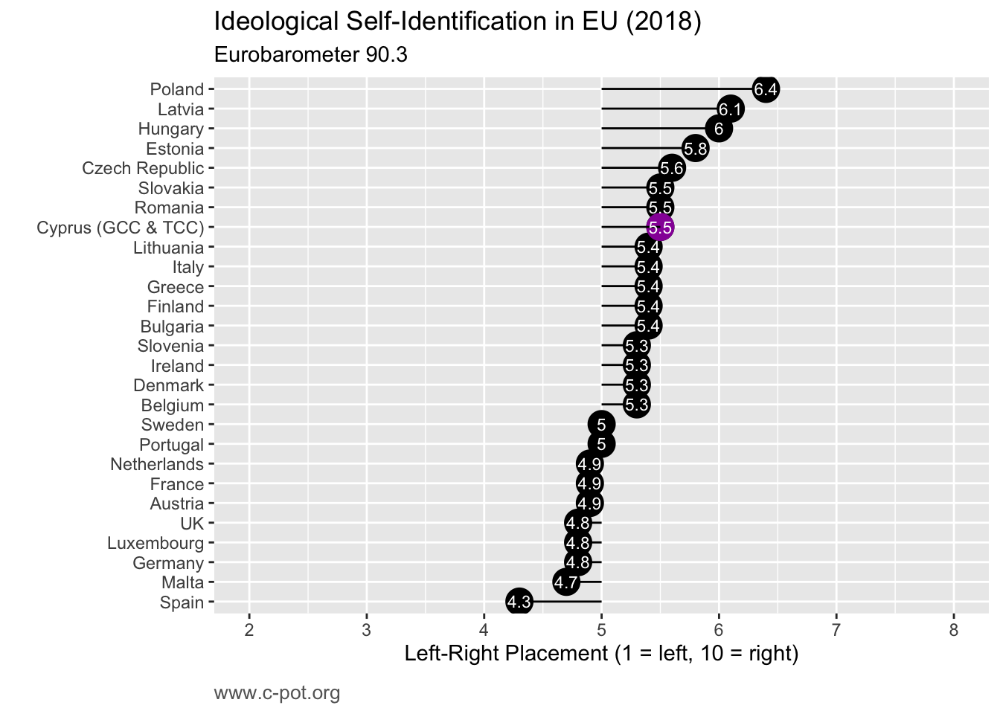

How do Cypriots classify their political ideologies and preferences? To what extent do they identify with the notions of the “left” and “right”?
• In general, Turkish-Cypriots are more likely to identify with the left or right than Greek-Cypriots. In turn, Greek-Cypriots are more likely to identify with the centre or to not express a preference than Turkish-Cypriots.
• The proportion of Cypriots that do not express a preference has gone from being the least common to the most common preference between 2004-2018.
• Cypriots on average are more to the right than most of the EU. Greek-Cypriot women tend to be more to the right than men, whereas in the EU overall, men are more to the right than women.
Η Ιδεολογική Ταυτότητα στην Κύπρο
Πώς κατατάσσουν οι Κύπριοι τις πολιτικές ιδεολογίες και προτιμήσεις τους; Σε ποιο βαθμό ταυτίζονται με τις αντιλήψεις της “αριστεράς” και της “δεξιάς”;
• Σε γενικές γραμμές, οι Τουρκοκύπριοι ταυτίζονται με τις αντιλήψεις της αριστεράς ή της δεξιάς σε πιο ψηλά ποσοστά απ’ ό,τι οι Ελληνοκύπριοι. Οι Ελληνοκύπριοι ταυτίζονται με τις αντιλήψεις του κέντρου ή δεν εκφέρουν προτίμηση σε ψηλότερα επίπεδα απ’ ό,τι οι Τουρκοκύπριοι.
• Το ποσοστό των Κυπρίων που δεν εκφέρει προτίμηση έχει αυξηθεί από την λιγότερη συχνή τοποθέτηση στην πιο συχνή τοποθέτηση μεταξύ το 2004 και 2018.
• Οι Κύπριοι τείνουν προς τα δεξιά σε ψηλότερα επίπεδα από το Κοινοτικό μέσο όρο. Οι Ελληνοκύπριες τοποθετούνται προς τα δεξιά περισσότερο απ’ ό,τι οι άνδρες, ενώ στην ΕΕ συνολικά, οι άντρες τοποθετούνται προς τα δεξιά περισσότερο απ’ ό,τι οι γυναίκες.
Kıbrıs’ta İdeolojik Kimlikler
• Kıbrıs Türkleri siyasi ideolojilerini ve tercihlerini nasıl tanımlıyorlar? “Sol” ve “sağ” kavramları ile kendilerini ne ölçüde özdeşleştiriyorlar? Kıbrıs Türkleri genel olarak Kıbrıs Rumlarına kıyasla sol veya sağ görüşlere daha yatkınlardır. Öte yandan Kıbrıs Rumları kendilerini çoğunlukla merkezde konumlandırıyorlar veya siyasi bir tercihte bulunmuyorlar.
• Siyasi görüş belirtmeyen Kıbrıslıların oranı 2004-2018 arasında en nadir rastlanan siyasi tercihten en sık rastlanan siyasi tercihe ilerlemiştir.
• Kıbrıslılar çoğunlukla Avrupa Birliği’ne nazaran sağa daha yatkınlardır. Kıbrıslı Rum kadınlar erkeklere göre sağ görüşlere sahipken Avrupa Birliği’nde erkekler genellikle kadınlara göre sağ görüşlere daha meyillilerdir.
How do Cypriots classify their political ideologies and preferences? To what extent do they identify with the notions of the “left” and “right”?
To explore this we use Eurobarometer survey questions from 2004-2018 that ask respondents to place themselves on a 10-point scale where ‘1’ represents the left and ‘10’ represents the right. First we consider the extent to which Cypriots identify with the left and right over time. The Eurobarometer considers responses from ‘1’-‘4’ as ‘left’, ‘5’-‘6’ as ‘centre’, and ‘7’-‘10’ as ‘right’. Then we’ll examine average scores on the 10-point scale to get a sense of how it compares to the rest of the EU.
The results show that in most years, Turkish-Cypriots are more likely to identify with the left or right than Greek-Cypriots. In turn, Greek-Cypriots are more likely to identify with the centre or to not express a preference (i.e. say they don’t know) than Turkish-Cypriots. Among Greek-Cypriots, the proportion that identifies with the left has declined the most during this time period, while the proportion that does not express a preference has increased substantially.
In fact, the lack of an ideological preference has become increasingly common among all Cypriots, as more recently it has risen among Turkish-Cypriots as well. The proportion of Cypriots that do not express a preference has gone from being the least common to the most common preference over this time period. This may reflect the increasing disillusionment with politics in Cyprus discussed in the first two blog posts, and again particularly for Greek-Cypriots.
Note: no data For Turkish-Cypriots in 2012 & 2013.
Interactive visualizations: hover over to display values, double-click to zoom, click legend to hide/show specific lines
Despite these differences in ideological preferences, the most recent 2018 data show that among people that do identify with an ideological position (as opposed to those that say they don’t know), the average score of Greek-Cypriots and Turkish-Cypriots on the 10-point left-right scale is quite similar. Greek-Cypriot women are more to the right than men, whereas in the EU overall, men tend to be more to the right than women.
Cypriots on average are more to the right than most of the EU. Cypriots’ average placement on the 10-point scale is 5.5, whereas the EU-28 score is 5.1. Out of 28 countries, Cypriots rank 6th (along with Slovakia and Romania) on the left-right continuum.

Data sources
Eurobarometer: 62, 63.4, 65.2, 68.1, 70.1, 71.3, 74.2, 75.3, 81.4, 84.3, 85.2, 87.3, 90.3